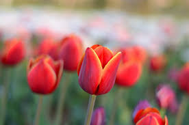
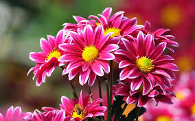
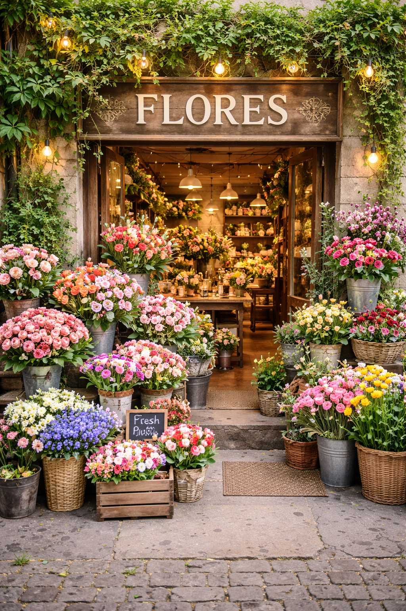

El tulipán es una flor muy conocida por su belleza y sus colores llamativos. Pertenece al género Tulipa y tiene su origen en Asia Central, aunque actualmente se relaciona mucho con Países Bajos debido a sus extensos cultivos y festivales de flores. Los tulipanes florecen principalmente en primavera y pueden encontrarse en colores como rojo, amarillo, rosa, blanco, morado y naranja. Además de ser muy utilizados en jardines y arreglos florales, cada color tiene un significado especial; por ejemplo, el tulipán rojo simboliza amor y pasión. Esta flor crece a partir de bulbos y necesita luz solar, riego moderado y tierra con buen drenaje para desarrollarse adecuadamente.

La flor de la imagen parece ser un crisantemo, una planta muy apreciada por sus pétalos abundantes y colores intensos. Los crisantemos pertenecen al género Chrysanthemum y son originarios de Asia, especialmente de China y Japón, donde tienen un importante valor cultural y ornamental. Estas flores florecen principalmente en otoño y pueden encontrarse en tonos como rosa, rojo, amarillo, blanco, morado y naranja. Además de decorar jardines y arreglos florales, simbolizan alegría, longevidad y amistad en muchas culturas. Los crisantemos necesitan buena iluminación, riego moderado y suelo bien drenado para crecer saludables y mantener su floración abundante.

Parece ser una cosmos, una planta ornamental muy valorada por su apariencia delicada y sus colores suaves. Las flores cosmos pertenecen al género Cosmos y son originarias de México y otras regiones de América. Se caracterizan por sus pétalos finos y abiertos en tonos rosa, blanco, morado y fucsia, además de sus tallos largos y ligeros que se mueven con facilidad con el viento. Florecen principalmente en verano y otoño, y simbolizan armonía, paz y belleza natural. Estas flores son fáciles de cultivar, necesitan abundante luz solar, riego moderado y suelo bien drenado para crecer sanas y producir una floración abundante.

Las florerías trabajan principalmente con un grupo de flores que dominan el mercado por su belleza, significado y facilidad de manejo. Entre las más vendidas están las Rosas, que son prácticamente el estándar en cualquier ocasión romántica o especial. Su popularidad se debe a que tienen muchos colores, buena duración y un fuerte valor simbólico. Junto a ellas destacan los Girasoles, muy buscados por su apariencia brillante y alegre, ideales para regalos casuales o de amistad. También son muy comunes los Tulipanes, que se perciben como más elegantes y modernos, y suelen usarse en arreglos más finos o minimalistas.
Otras flores muy importantes en el mercado son las Gerberas, conocidas por ser económicas, coloridas y resistentes, lo que las hace perfectas para ramos accesibles. En México tienen mucha presencia los Crisantemos y las Gladiolas, que se utilizan tanto en decoración como en eventos formales o ceremonias. Por su parte, los Lirios aportan un toque más sofisticado y suelen aparecer en arreglos elegantes, mientras que las Orquídeas se consideran una opción premium por su exotismo y larga duración, aunque su precio es más alto.
Más allá de cuáles se venden más, es importante entender por qué ciertas flores tienen mayor éxito. Factores como la duración después del corte, el significado cultural y la facilidad de transporte influyen mucho. Por ejemplo, las rosas y las gerberas duran varios días si se cuidan bien, mientras que flores más delicadas requieren mayor atención. Además, el significado juega un papel clave: el rojo en las rosas se asocia con amor, los girasoles con alegría y los lirios con respeto o solemnidad. Esto hace que las personas elijan flores no solo por cómo se ven, sino por lo que comunican.
También existen muchas otras flores que, aunque no siempre son las más vendidas, complementan arreglos y les dan personalidad. Entre ellas están las Claveles, muy usados por su resistencia y bajo costo; las Margaritas, que aportan un estilo fresco y sencillo; y las Peonías, muy valoradas en arreglos de lujo aunque menos comunes por su disponibilidad limitada. Estas flores suelen combinarse con follajes verdes para crear composiciones más completas y atractivas.
En general, no existe una sola “mejor flor”, sino que la elección depende del contexto. Las rosas siguen siendo la opción más universal, los girasoles destacan para regalos alegres, los tulipanes y lirios funcionan mejor en situaciones elegantes, y las orquídeas representan exclusividad. Entender estas diferencias es clave tanto si quieres comprar un arreglo adecuado como si estás pensando en vender flores, ya que el éxito depende de ofrecer opciones que se adapten a distintas emociones, presupuestos y ocasiones.